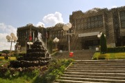
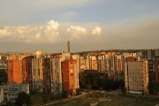
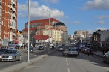
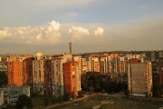
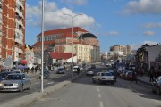

Disclaimer: These pages are not actively maintained, and some of the practical information on the site is out of date. I am working on a new version of the site that will focus more on my photos and memories of travel in Southeast Europe, and less on practical details that too easily become obsolete. In the meantime, please treat the information here with caution.
Kosovo for Beginners
Anna Wiman is a freelance journalist and writer who lived in Kosovo for a year.

National Library, Prishtina

Mother Teresa Street

Dardania Neighbourhood

New Mother Teresa Cathedral

University Hill from Grand Hotel
National Library, Prishtina
Mother Teresa Street

Dardania Neighbourhood

New Mother Teresa Cathedral
University Hill from Grand Hotel
- Kosovo has two official languages, Albanian and Serbian. Turkish is also widely spoken, especially in the city of Prizren which has a strong Turkish minority.
- Kosovo is a very safe place. Although gun ownership is still very high, theft and violent crime is very low so pay normal attention to your things.
- Keep to the paths if you are out in the nature - unfortunately mines are still out there although the war ended more than 10 years ago. If you are not accompanied by a local who knows the area, watch where you put your foot.
- Always carry a small flashlight with you. Power cuts are still common and the electricity might go off when you least expect it.
- The currency in Kosovo is euro. Although using credit cards is more common in Kosovo than for example in Albania it is still advised to carry cash.
- The majority of taxi companies operating in Kosovo's major cities have meters installed. If they don't, remember to always agree on a price before getting into a taxi.
- Prishtina is best seen by foot but taxis within the inner city rarely cost more than 2-3 euros. If you want to travel real cheap, a ride with one of the 7 different bus lines connecting all parts of the city cost only 30-40 cents.
- There is no bus service connecting Prishtina International Airport with the city centre. However, there are always plenty of taxis waiting outside the arrival hall and a trip into the city should not cost more than 15-20 euros.
- Travelling by bus in Kosovo is easy and cheap. From Prishtina, buses depart to all major cities in Kosovo every 15-30 minutes and usually cost between 2-3 euros. Students travel slightly cheaper. Travelling by bus into Kosovo is not a problem if you are travelling from Belgrade or Skopje. There are also buses connecting the western city of Kosovo, Peja with the capital of Montenegro, Podgorica.
- There are several trains daily connecting Prishtina with Skopje, the capital of Macedonia, and with Peja, Kosovo's second biggest city.
- Driving in Kosovo involves patience and understanding if you are used to driving in the EU. Kosovo traffic is chaotic and slightly aggressive. The road quality varies - roads are being constructed or repaired all over Kosovo and pot holes are extremely common. In the summer, the roads easily clog due to car caravan's part of wedding celebrations.
- Remember that the European Green Card Insurance isn't valid in Kosovo. You have to buy a special Kosovo car insurance at the borders if entering the country by car. As of January 2011, the insurance costs 40 euros for 2 weeks, 85 euros for 3 months and 225 euros for 6 months and you can pay only cash at the border.
- Prishtina does not have a lot of green spaces. The Germia Park, located a few kilometres from the city centre is an ideal place for running and biking. It also has a huge outdoor swimming pool which is very popular in the summer.
- Smoking is a national habit in Kosovo. In the bigger cities you can see small children or young men walking around the street cafés, selling cigarettes, refill cards for cell phones or nuts.
- Public bathrooms rarely ever have toilet paper available. Therefore, carrying your own wet wipes is a good idea. Small packages of wet wipes can be bought even in the smallest minimarket. Wet wipes become a daily part of life as they are also good to wipe off your shoes with - they will become dirty. Kosovo is quite muddy in the winter and dusty in the summer.
- Kosovo has three national TV channels: RTK (Radio and Television Kosovo), RTV 21 and KTV (Kohavision) and several daily newspapers, Koha Ditore regarded as the most serious one.
- Kosovo's two biggest cell phone operators are VALA (operated by the Kosovo post) and privately owned IPKO. Cell phone cards can be purchased in IPKO stores and at post offices for 5 euros.
- When entering an Albanian home, take off your shoes. You will most likely be offered slippers as the floor might be cold. If someone if the family smokes, you will be offered a cigarette. If you are a non-smoker, rejecting a cigarette is not a problem.
- If you are a guest in an Albanian home, you will be offered something to drink or maybe even given a gift. This is a sign of kindness and hospitality and can be taken very offensively if rejected.
- As a guest you will be asked personal questions about you and your family. This is part of the greeting ritual and you will be asked the same questions by all people currently in the room. Do not be surprised if you are invited to spend the night.
Restaurant suggestions in Prishtina
- Gresa (Rr Fehmi Agani) - Central location near the OSCE building, popular with internationals. Excellent food from all over the world and one gets a huge portion for the money.
- Home (Rr Luan Haradinaj) - prices are quite high which only internationals and Kosovo politicians can afford. Their food is great - salads are amazing.
- Te Pishat (Rr Qamil Hoxha) - serves excellent, home-made Albanian food, such as the traditional Albanian dish flija.
- Aurora Pizzeria (Rr Dëshmoret e Kombit) - the ideal place for fast food and pizza-to-go. Popular with students and open 24h.
- California - hamburgers and other fast food at a nice price. Their chicken file is thin and deliciously cooked.
All text on and photos on this page copyright Anna Wiman 2011.